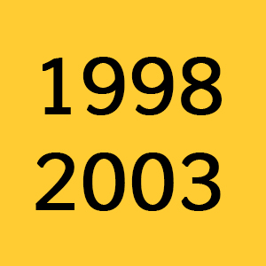

Eduardo Fernández
Experiencia como editor, camarógrafo, realizador audiovisual y redactor publicitario.
He trabajado en Sony Entertainment Televisión, AXN, productoras independientes, agencias publicitarias y como freelance en proyectos diversos.
Nivel alto de inglés